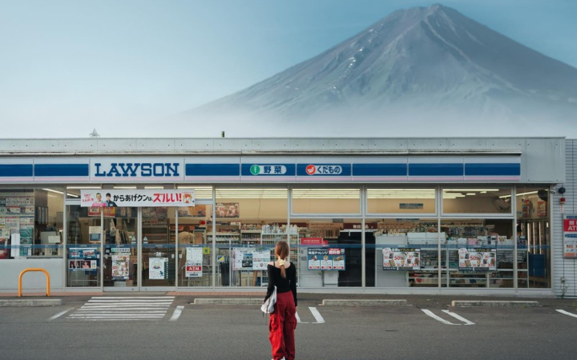

中午12:00, 前一天
⏰准备: 确认出行清单
1. 护照
2. 身份证
3. 带一只笔
4. 买境外流量卡
5. 填写VJW
6. 准备7天换洗衣物(夏装20-25度)


上午7:30, 第三天
🗻景点: 富士山一日游(懒人)
出行方式: 跟团
酒店接送: 否
集合时间: 9:00(东京时间)
结束时间: 19:30(东京时间)
集合地点: JR京东站丸之北口
 🗻景点: 新仓山浅间公园
🗻景点: 新仓山浅间公园
 🗻景点: 富士山
🗻景点: 富士山
 🗻景点: 忍野八海
🗻景点: 忍野八海
描述: 八个常年13度泉水池, 泉水可以直饮, 非常清澈
 🗻景点: 富士山下的罗森便利店
🗻景点: 富士山下的罗森便利店

🗻景点: 河口湖天上山公园(含缆车)
描述: 有点像"你的名字"动画中的"糸守町"镇, 如2图


上午6:30, 第五天
🚃景点: 镰仓高校前
出行方式: 跟团
酒店接送: 否
集合时间: 8:00(东京时间)
结束时间: 18:00(东京时间)
集合地点: JR京东站丸之北口
🚃景点: 镰仓大佛
 🚃景点: 鹤冈八幡宫
🚃景点: 鹤冈八幡宫
描述: 公元1063年建, 镰仓初代将军的幕府所在地
 🚃景点: 镰仓小町通
🚃景点: 镰仓小町通
描述: 一条商业街, 吃东西, 买东西的地方
 🚃景点: 江之岛
🚃景点: 江之岛
描述: 镰仓市的一个小岛, 有一座桥与之相连，岛上可以眺望镰仓市
 🚃景点: 江岛神社
🚃景点: 江岛神社
描述: 江之岛上的一个神社, 祭拜神灵的地方
 🚃景点: 镰仓高校前
🚃景点: 镰仓高校前
描述: 该一日游的灵魂景点, 灌篮高手的场景地
 🚃景点: 湘南海岸
🚃景点: 湘南海岸
描述: 这里是《灌篮高手》中流川枫上学的路, 也是许多海边场景的取景地


中午14:00, 第六天
🛍️景点: 心斋桥
地址: 📍跳转谷歌